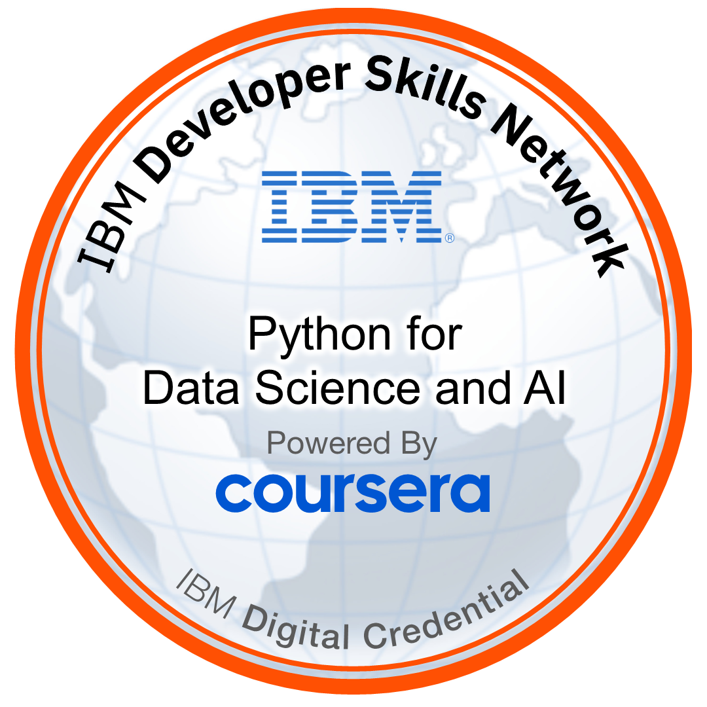
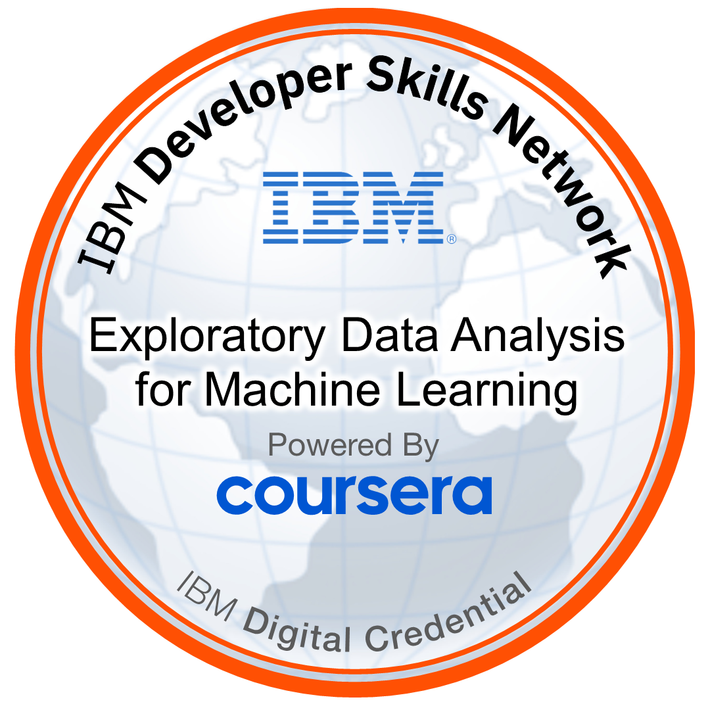
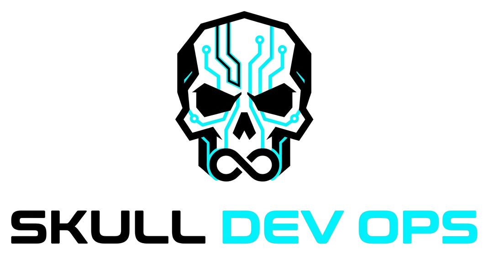

Rose Parker
Production Training & Team Leadership | Founder, Skull Dev Ops
About
A hands-on technician who gets lines running and people up to speed.
Four-plus years across aerospace, automotive, semiconductor and safety-product production, including Starlink PCB builds at SpaceX. I've led an SMT department, trained and certified production team members at Tesla, and kept SMT lines running as a maintenance technician.
Known for hands-on troubleshooting, clear work instructions, and getting new technicians up to speed.
Goal: lead technician on a high-reliability production team, growing into production supervision, while finishing a robotics degree and building Python skills.
Leadership highlights
Leading departments, training teams, owning uptime.
Led an SMT department
At EIT 2.0: line setup and prototype builds, assessed readiness to scale, coordinated vendors on equipment and materials.
Trained and certified teams
At Tesla: assembly procedures, electromechanical tools, standard work, and automation HMIs.
Owned line uptime
As an SMT maintenance technician: troubleshooting equipment and repairing damaged PCBs and ICs.
Bridged floor and engineering
At Blue Robotics: prototype builds, engineering changes, and production issues.
Experience
Seven roles across aerospace, automotive, semiconductor and safety products.
Newest first.
-
Jul 2026 – Nov 2026
Assembly Technician, Blue Robotics · Torrance, CA
- Built products and subassemblies to work orders, SOPs and quality requirements.
- Partnered with engineering and quality on prototype builds and engineering changes.
- Kept assembly, inspection, test and rework records complete for traceability.
- Flagged issues early to keep schedules on track.
-
Feb 2025 – Mar 2025
SMT Department Lead, EIT 2.0 LLC · Virginia
- Led SMT line setup and engineering prototype builds.
- Assessed SMT processes and readiness for production scaling.
- Coordinated with vendors.
-
Oct 2024 – Dec 2024
SMT Maintenance Technician, Trans-Lux Corporation · St. Louis, MO
- Maintained and troubleshot SMT equipment for line uptime.
- Repaired PCBs; replaced and hand-soldered components and ICs.
-
Jun 2024 – Nov 2024
SMT Technician, MSA Safety · Pittsburgh, PA
- Ran a three-module SMT line for runs of about 100 to 4,000 pieces.
- Loaded recipes; set nozzles, cameras and feeders; verified reels, paste and stencils.
- SPI/AOI inspection, IC testing, rework and shipment prep from schematics and BOMs.
-
Feb 2024 – May 2024
SMT Operator, SpaceX · Bastrop, TX
- Supported prototype manufacturing and testing of Starlink dish PCBs.
- AOI inspection and network-connectivity testing.
- Maintained and calibrated SMT/AOI equipment using HMI data.
-
Oct 2023 – Mar 2024
Gas and Chemical Technician, Samsung · Austin, TX
- Monitored gas and chemical systems through SCADA/HMI.
- Handled hazardous materials safely; rounds, readings and maintenance.
-
Oct 2022 – Jul 2023
Certified Production Trainer, Tesla · Austin, TX
- Trained and certified team members on assembly-line procedures, timed stations and standard work.
- Coached operators on electromechanical tools and automation HMIs.
- Supported troubleshooting during downtime.
Skills
From the SMT line to the shift handoff.
Leadership
- Technician training and certification
- Daily work assignments
- Standard work and SOPs
- Shift communication
- Continuous improvement
SMT & PCBA
- Line setup and operation
- Recipe loading
- Feeder, nozzle and stencil setup
- SPI/AOI inspection
- Fine-pitch soldering and rework
- Component and IC replacement
Quality & Test
- IPC-A-610 awareness
- ESD controls
- Inspection and traceability records
- Functional and network testing
- DMMs, oscilloscopes, power supplies
Operations
- Work orders, schematics, blueprints, BOMs
- Production scheduling
- Inventory and material control
- Preventive maintenance
- HMI/SCADA
Technical
- CAD/AutoCAD, Fusion 360
- Python, data analysis
- HTML/CSS/JavaScript
Education
Studying robotics alongside the work.
University of Advancing Technology
Robotics & Embedded Systems coursework, online.
In progress
Certifications
Six Python and data credentials, 2025–2026.
| Credential | Issuer | Date | Verify |
|---|---|---|---|
 Python for Data Science and AI |
IBM / Coursera | Mar 24, 2025 | Credly |
 Exploratory Data Analysis for Machine Learning |
IBM / Coursera | Mar 27, 2025 | Credly |
| Python for Non-Programmers 2h 11m | LinkedIn Learning | Apr 14, 2026 | — |
| Certified Entry-Level Python Programmer (PCEP-30-02) Cert Prep 3h 56m | LinkedIn Learning | Apr 23, 2026 | — |
| Practical Python for Algorithmic Trading 1h 54m | LinkedIn Learning | Apr 27, 2026 | — |
| Advanced Python: Object-Oriented Programming 1h 21m | LinkedIn Learning | May 6, 2026 | — |
Projects
Ten public projects on GitHub.
Python, CAD and web work, each linked to its repo. Download the files , run the Python, or spin the 3D models.
Skull Dev Ops
